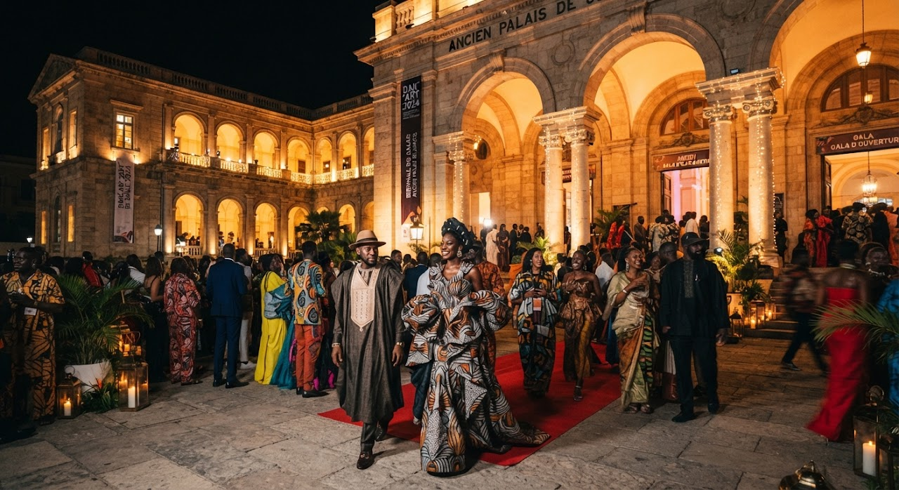

VernissageVen 14 • 18:00 – 23:00pin_dropPavillon central • Grande cour
Vernissage officiel & remise du Prix Africadôme de la création
Ouverture du festival en présence des artistes de l'exposition internationale et des commissaires invités.
Sur invitation & pass festivalarrow_forward